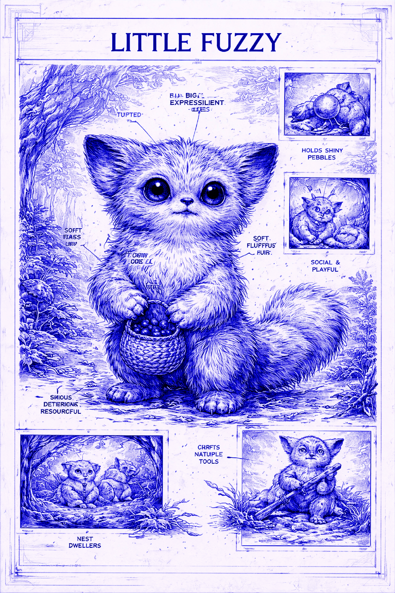
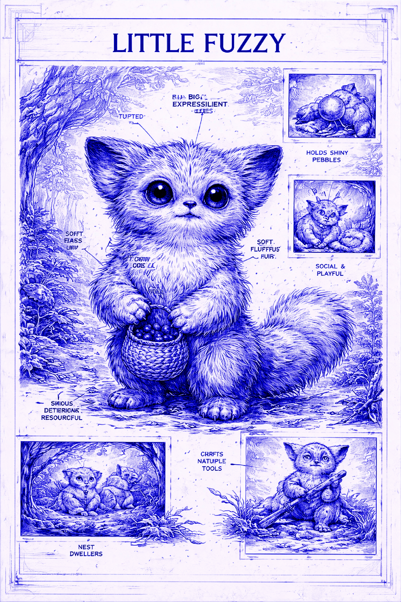
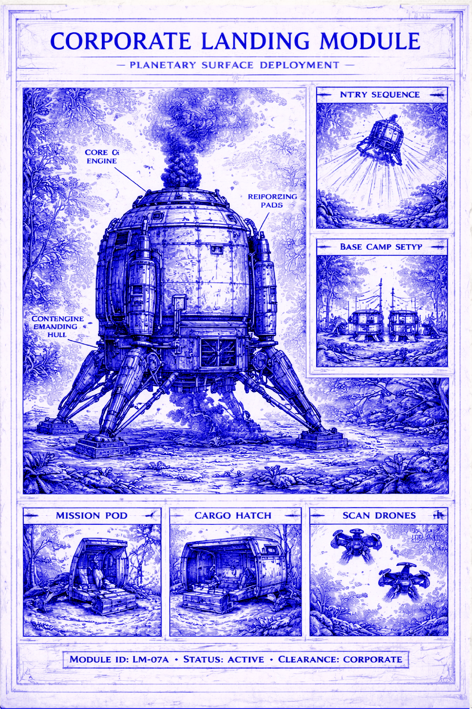
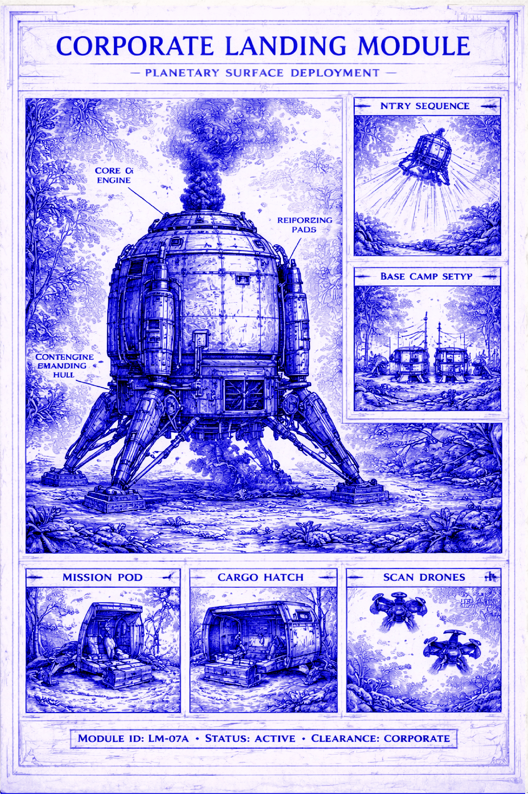

When the survey vessel Hesperus-7 entered stable orbit around Zarathustra, no member of the expedition anticipated that the planet would become one of the most significant discoveries in human exploratory history. Zarathustra had been classified as a marginal world: breathable atmosphere, moderate gravity, stable climate, and no confirmed signs of advanced life. According to corporate models, it was suitable for controlled settlement, mineral extraction, and long-term biological research. It was considered a manageable asset, not a destination requiring cultural sensitivity or ethical restraint.
The landing module touched down in the Kheron Valley during the early planetary morning cycle. Automated systems confirmed structural stability, atmospheric safety, and environmental compatibility. Within hours, Alpha Camp was assembled and fully operational. Reconnaissance drones were deployed in expanding survey rings, collecting topographic data, mineral density readings, and ecological samples. All systems performed within expected parameters. Initial reports indicated no significant hazards and no anomalies beyond normal planetary variance.
For the first several hours, operations followed standard protocol. Geological samples were catalogued, water sources were identified, and preliminary excavation zones were mapped. Communication with orbital command remained uninterrupted. The mission appeared routine.
At approximately eleven hours after landing, long-range sensors detected irregular movement patterns in the Eastern Survey Zone. The motion signatures did not correspond to any known indigenous species previously recorded by orbital scans. They were too coordinated to be simple animal herds and too dynamic to be explained by atmospheric phenomena. Multiple drones were redirected to investigate.
Visual confirmation arrived shortly thereafter.
The drones recorded small bipedal creatures moving in organized groups across the terrain. They were covered in dense, silvery fur, possessed forward-facing eyes, and displayed highly developed manual dexterity. Their movements were cautious but deliberate. They paused to observe drone activity. They adjusted their routes in response to mechanical noise. They reacted to scanning beams with calculated repositioning rather than panic.
The creatures did not flee.
They watched.
Further observation revealed increasingly complex behavior. The organisms constructed temporary shelters using vegetation and mineral fragments. They cooperated in gathering food and distributing resources. They modified natural pathways to improve mobility. They demonstrated memory, repetition, and innovation. When confronted with unfamiliar objects, they examined them methodically rather than instinctively.
Within twenty-four hours, it became clear that these beings could not be classified as simple fauna.
They exhibited learning.
They exhibited planning.
They exhibited social coordination.
They were later designated Fuzzy-Class Organisms, though the informal name “Fuzzies” quickly became standard among the research staff.
Chief Researcher Henry Barton Piper ordered a temporary halt to extraction activity in the surrounding region. His decision was based on mounting evidence that the species displayed early-stage intelligent behavior. Corporate command initially resisted the suspension, citing projected revenue loss and contractual obligations. Piper responded by submitting detailed cognitive and behavioral analysis, emphasizing the unprecedented nature of the discovery.
The response from headquarters was delayed.
When it arrived, it was carefully worded.
The term “intelligent species” was replaced with “highly adaptive biological system.”
The phrase “ethical responsibility” was omitted entirely.
Observation continued under revised guidelines.
Non-invasive behavioral experiments were initiated. Researchers placed simple mechanical devices, reflective panels, and energy-neutral light sources near known Fuzzy gathering sites. The results exceeded all projections. The Fuzzies rapidly learned cause-and-effect relationships. They disassembled unfamiliar objects and repurposed components. They created protective structures around energy sources. They developed shared strategies for interacting with experimental materials.
In several recorded instances, younger individuals were observed learning directly from older group members through imitation and guided behavior. This confirmed the presence of cultural transmission.
They were teaching.
They were learning.
They were evolving.
One of the most significant events occurred when a technician accidentally dropped a portable data pad near Observation Point Delta. Before retrieval could be authorized, a small group of Fuzzies approached the device. Within minutes, they had activated its interface. They discovered video playback functions. They repeatedly viewed recorded drone footage showing their own movements and human activity.
They were watching themselves.
They were watching humanity.
They were analyzing interaction.
When the technician approached slowly to retrieve the device, the group did not disperse. They observed him calmly. One individual placed its hand against the screen, matching the movement displayed in the recording. The gesture was precise. Intentional. Meaningful.
This moment marked the effective beginning of direct contact.
From that point forward, the presence of humanity on Zarathustra could no longer be considered neutral. Every drone flight, every transmission, every structural modification, and every discarded object became part of the Fuzzies’ developing worldview. Human activity was now embedded within their cultural memory.
Internal debate intensified among the research staff. Some advocated immediate recognition of sentient status. Others warned that premature classification could compromise long-term study. Corporate analysts continued to prioritize resource extraction schedules. Tension between scientific responsibility and economic pressure increased steadily.
Piper submitted a comprehensive report outlining the moral implications of continued interference. He warned that the Fuzzies were adapting at an accelerated rate in response to human presence. He argued that unregulated exposure could irreversibly alter their social development.
The report was acknowledged.
No operational changes followed.
In his private mission log, Piper recorded a final observation during the first phase of contact:
“We arrived seeking materials and data. Instead, we found minds in the process of becoming. We are no longer explorers observing a distant world. We are participants in its history. Whatever these beings become, we will be part of the reason.”
With that entry, the Contact Phase was formally recognized.
The archive was opened.
And the future of Zarathustra entered a path that could never again be neutral.

 



 
